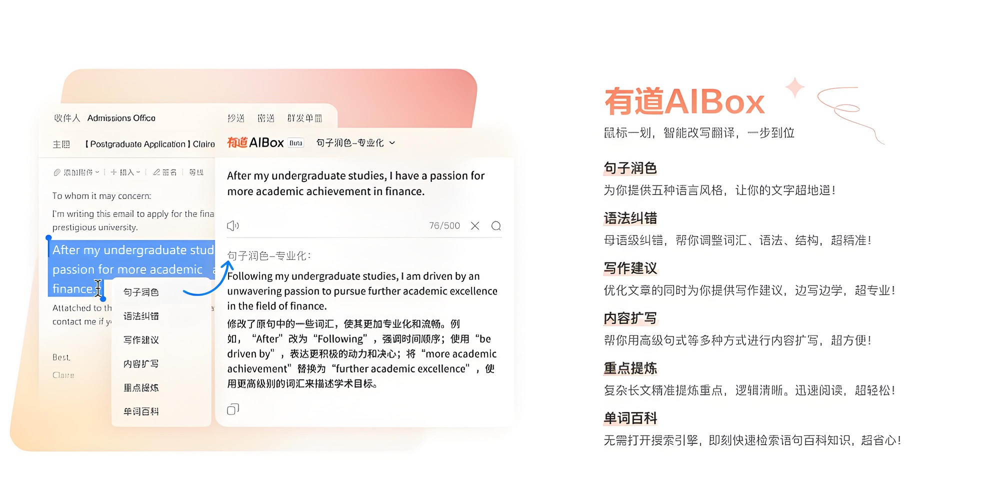
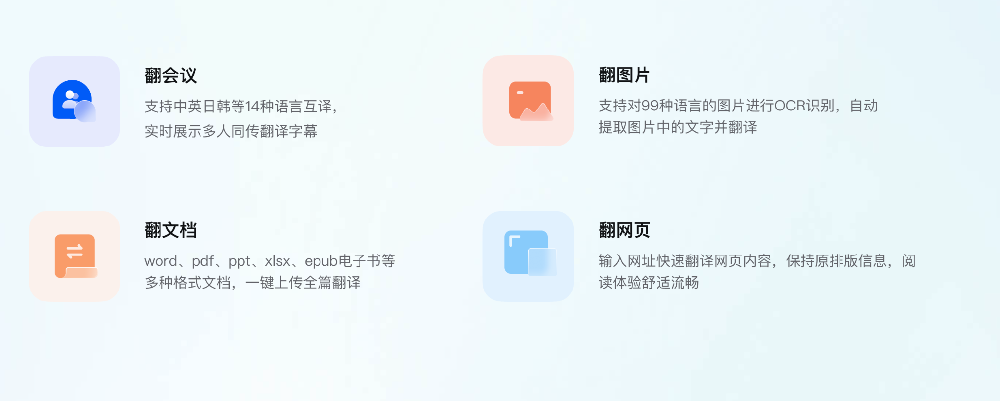

有道翻译
有道翻译
立即下载
通过疾风软件市场下载，感受更快速、更安全的下载体验
有道翻译 用AI重新定义翻译

有道翻译 各种翻译帮你搞定

软件简介
有道翻译是网易公司开发的一款翻译软件，其最大特色在于翻译引擎是基于搜索引擎，网络释义的，也就是说它所翻译的词释义都是来自网络 。有道翻译提供即时免费的中文、英语、日语、韩语、法语、德语、俄语、西班牙语、葡萄牙语、越南语、印尼语、意大利语、阿拉伯语、荷兰语、泰语全文翻译、网页翻译、文档翻译服务 。它支持文本翻译、语音翻译、图片翻译等多种翻译方式，并基于有道神经网络翻译技术，能够快速并较为准确地返回翻译结果 。此外，有道翻译还提供了多种输入方式，如手写输入、拍照输入等，方便用户在不同场景下进行文字输入 。有道翻译官作为其手机应用，支持107种语言翻译，覆盖186个国家，满足学习翻译、工作翻译、出国翻译、旅游翻译等需求，并采用业界最先进的有道神经网络翻译引擎技术YNMT，相比传统的机器翻译，翻译准确率显著提升
有道翻译
用AI重新定义翻译
立即下载